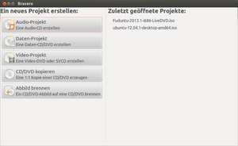
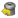
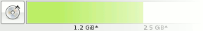
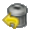
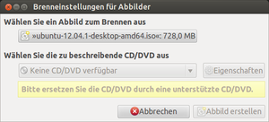
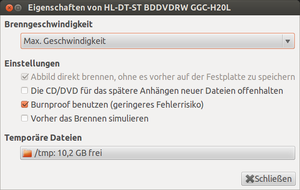
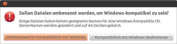

Brasero
Dieser Artikel wurde für die folgenden Ubuntu-Versionen getestet:
Ubuntu 16.04 Xenial Xerus
Ubuntu 14.04 Trusty Tahr
Zum Verständnis dieses Artikels sind folgende Seiten hilfreich:
Brasero  ist ein Brennprogramm für die Desktop-Umgebung GNOME. Das Programm ermöglicht, schnell und einfach eine CD, DVD zu brennen. Kritiker bemängeln, dass Brasero zu einfach sei und manche Spezialfunktionen fehlten – die aber eben auch nur in Spezialfällen benötigt werden. Brasero bietet folgende Funktionen:
ist ein Brennprogramm für die Desktop-Umgebung GNOME. Das Programm ermöglicht, schnell und einfach eine CD, DVD zu brennen. Kritiker bemängeln, dass Brasero zu einfach sei und manche Spezialfunktionen fehlten – die aber eben auch nur in Spezialfällen benötigt werden. Brasero bietet folgende Funktionen:
CD/DVD-Datenträger "on the fly" kopieren
Unterstützung von "Multisession"-CDs und DVDs
Image-Dateien von Datenträgern erstellen
Wiederbeschreibbare CD/DVDs löschen
Unterstützung von den Abbildtypen .cue, .iso, .toc
Drag & Drop / Copy & Paste Unterstützung
CD/DVD-Cover erstellen/bearbeiten
CD-TEXT-Information auf Audio-CDs brennen
Video-DVDs kopieren
Unterstützung für DL-DVDs
Erstellung von Video-DVDs und SVCDs
MP3-CDs brennen (mit Extra-Skript oder Drag'n'Drop).
Installation¶
Brasero war bis einschließlich Ubuntu 15.10 das Standardbrennprogramm in Ubuntu. Bei anderen Desktop-Umgebungen kann das Programm mit den folgenden Paketen installiert werden [1].
Benutzung¶
 Anschließend findet man es bei Ubuntu-Varianten mit einem Anwendungsmenü unter "Multimedia -> Brasero" [2].
Bei Programmstart kann der Benutzer wählen, ob ein Audio-Projekt, Daten-Projekt, ein Video-Projekt, eine CD/DVD kopiert oder ein Abbild gebrannt werden soll. Die Bedienung ist intuitiv und übersichtlich. Dateien werden per Drag & Drop dem jeweiligen Projekt hinzugefügt. Dies geschieht entweder mit dem integrierten oder mit einem externen Dateimanager. Sofern das Programm Dateien nicht verarbeiten kann, sortiert es diese aus. Unter  kann man überprüfen, welche Dateien nicht in das Projekt übernommen wurden.
 Je nach gewähltem Projekt findet man im unteren Teil des Fensters eine Anzeige, der man entnehmen kann, wie viel Speicherplatz auf dem eingelegten Medium noch zur Verfügung steht. Sollte dieser nicht ausreichend sein, kann man unter die Größe des eingelegten Mediums ändern. Der Brennvorgang wird durch "Brennen" gestartet.
Eine grobe Übersicht der im Programm verwendeten Symbole und deren Bedeutung:
| Brasero | |
| Symbol | Beschreibung |
| Neues leeres Verzeichnis erstellen | |
| Sitzung importieren | |
|  | Vom Projekt automatisch gelöschte Dateien einsehen |
| Markierte Dateien hinzufügen | |
| Markierte Dateien entfernen | |
| Im Audio-Projekt eine Pause hinzufügen | |
| Dateimanager | |
| Der Brennvorgang wird gestartet | |
| Ändern des Mediums CD/DVD - Audio-Projekt: 70 - 100 Min - Daten-Projekt: 650 MB - 7,9 GB | |
 | Videovorschau vergrößern bzw. verkleinern |
| Video- /Musikvorschau starten und stoppen | |
| Projekt löschen - zu finden unter: "Bearbeiten -> Projekt leeren" | |
Audio-CD¶
Um eine Audio-CD zu brennen, ist im Startbildschirm Audio-Projekt oder "Projekt -> Neues Projekt -> Neues Audio-Projekt" zu wählen. Die Dateien, welche gebrannt werden sollen, werden hier eingefügt (MP3 /OGG). Möchte man nach einem Stück eine Pause einfügen, wählt man an. Es wird nun eine Pause von 2 Sekunden eingefügt. Abschließend den Vorgang mit "Brennen" starten. Im sich nun öffnenden Brenndialog kann man den Titel der CD ändern. Standard ist Musik-CD (Tag Monat Jahr).
Vor dem Brennen werden die Audio-Daten automatisch normalisiert. Möchte man dies nicht, geht man im Menü "Bearbeiten" zu den "Plugins" und deaktiviert dort das Plugin für das Normalisieren.
Daten-CD/-DVD¶
Um eine Daten-CD bzw. -DVD zu brennen, ist im erwähnten Startbildschirm Daten-Projekt zu wählen. Oder man navigiert zu "Projekt -> Neues Projekt -> Neues Daten-Projekt". Das Prinzip ist ähnlich wie bei einem Audio-Projekt.
MP3-CD¶
Standardmäßig importiert Brasero M3U-Wiedergabelisten nur für Audio-Projekte. Mit dem angehängten Shell-Skript, das eine simple grafische Benutzeroberfläche zum Auswählen einer Playlist (nur M3U) zur Verfügung stellt, ist es möglich, eine Wiedergabeliste auch in ein Daten-Projekt zu importieren und so eine MP3-CD zu brennen. Dies ist die allererste Version des Skripts und wurde bisher nur mit Wiedergabelisten getestet, die mit Banshee exportiert worden. Das Skript kann hier heruntergeladen werden: burnmp3  .
.
Außerdem ist es möglich, mit manchen GNOME-/GTK-Anwendungen wie Rhythmbox, Quod Libet oder Gmusicbrowser MP3s per Drag & Drop in ein Daten-Projekt in Brasero einzufügen. Einfach die Titel im Musikplayer markieren, dann mit der linken Maustaste  darauf klicken, linke Maustaste gedrückt halten und die Dateien in das Daten-Projekt-Fenster von Brasero ziehen und Maustaste loslassen. Das funktioniert auch mit Amarok und Exaile, aber leider nicht mit Banshee.
darauf klicken, linke Maustaste gedrückt halten und die Dateien in das Daten-Projekt-Fenster von Brasero ziehen und Maustaste loslassen. Das funktioniert auch mit Amarok und Exaile, aber leider nicht mit Banshee.
Video-DVD / SVCD¶
Brasero kann auch Video-DVDs / SVCDs erstellen und brennen. Dazu klickt man auf "Video-Projekt" oder wählt den Menüpunkt "Projekte -> Neues Projekt -> Neues Video-Projekt". Hierzu benötigt man noch das folgende Paket:
dvdauthor (universe)
 mit apturl
mit apturl
Paketliste zum Kopieren:
sudo apt-get install dvdauthor
sudo aptitude install dvdauthor
Image / Abbild¶
Erstellung¶
Um ein Image von einem Datenträger zu erstellen, ist als Ziellaufwerk "Abbilddatei" auszuwählen. "Abbild erstellen" startet den Vorgang. Man kann unter "Eigenschaften" zwischen folgenden Formaten wählen: cue, iso und toc.

Brennen¶
Um ein Image zu brennen, wählt man im Dateimanager die entsprechende Datei mit rechts  aus. Im Kontextmenü kann man nun die Option "Mit Brasero öffnen" auswählen. Ein Fenster des Brennprogramms öffnet sich. Abschließend wählt man "Brennen" und das Image wird auf das Medium gebrannt.
aus. Im Kontextmenü kann man nun die Option "Mit Brasero öffnen" auswählen. Ein Fenster des Brennprogramms öffnet sich. Abschließend wählt man "Brennen" und das Image wird auf das Medium gebrannt.
Alternativ kann man zuerst Brasero aufrufen und dann im Menü auf "Abbild brennen" klicken. Im nun sich öffnenden Menü wählt man das Image aus, das gebrannt werden soll und startet den Brennvorgang durch "Brennen".
Kopieren¶
Daten-CDs¶
Um Daten-CDs zu kopieren , ist "CD/DVD kopieren" zu wählen. Alternativ ist dieser Punkt über "Projekt -> Neues Projekt -> Kopiere CD/DVD" zu erreichen. Nun ist das Quell- und Ziellaufwerk auszuwählen, "Kopieren" startet den Brennvorgang.
Multisession¶
Um eine Multisession-CD/DVD zu erstellen, wählt man im Brennmenü den Punkt "Die CD/DVD für das spätere Anhängen neuer Dateien offenhalten" (bei früheren Versionen: "Schließe die CD/DVD nicht ab, um später Dateien anhängen zu können").
Projekt¶
Alle Projekte können bei Bedarf gespeichert werden. Hierzu wählt man unter "Projekt" den Punkt "Speichern" aus und legt das Projekt unter einem entsprechenden Namen ab. Unter "Projekt -> Öffnen" kann dieses bei Bedarf erneut aufgerufen werden.

Brennen¶
Beim Klick auf "Brennen" eines Projekts erscheint das Brennmenü. Die hier zu treffenden Einstellungen erklären sich von selbst bzw. wurden bereits zuvor thematisiert.
Vorschau¶
Um die Foto-, Video- bzw. Audio-Vorschau im Programm zu (de)aktivieren, muss man im Programm lediglich die Taste F11 betätigen oder die entsprechende Option unter "Ansicht -> Vorschau" an- bzw. abwählen.
Tastenkürzel¶
| Tastenkürzel | |
| Taste(n) | Beschreibung |
| Strg + N | Neues Projekt |
| Strg + O | Projekt öffnen |
| Strg + S | Projekt speichern |
| Strg + F | Auf Unversehrtheit prüfen s. md5sum |
| F7 , F8 | Dateimanager ein/ausblenden |
| F9 | Ansicht Wiedergabeliste (de)aktivieren |
| F11 | Video- / Audiovorschau (de)aktivieren |
| Strg + Q | Programm beenden |
Problembehebung¶
Audio-CDs auf wiederbeschreibbaren Medien¶
Die Nutzung von wiederbeschreibbaren CDs (CD-RW) für Audio-CDs ist – technisch bedingt – bei alten CD-Playern als Abspielgerät problematisch. Brasero weist darauf bei der Erstellung einer solchen CD zwar hin, verhindert ein solches Unterfangen aber nicht.

Kompatibilität mit Windows¶
Will man eine Daten-CD brennen, auf der sich Dateinamen mit mehr als 64 Zeichen befinden, erscheint nebenstehendes Fenster. Hier kann man getrost die Kompatibilität mit Windows deaktivieren. Bei den heutigen Standards sind solche Beschränkungen nicht mehr gegeben.
 Programmübersicht
Programmübersicht- Erstellt mit Inyoka
-
 2004 – 2017 ubuntuusers.de • Einige Rechte vorbehalten
2004 – 2017 ubuntuusers.de • Einige Rechte vorbehalten
Lizenz • Kontakt • Datenschutz • Impressum • Serverstatus -
Serverhousing gespendet von